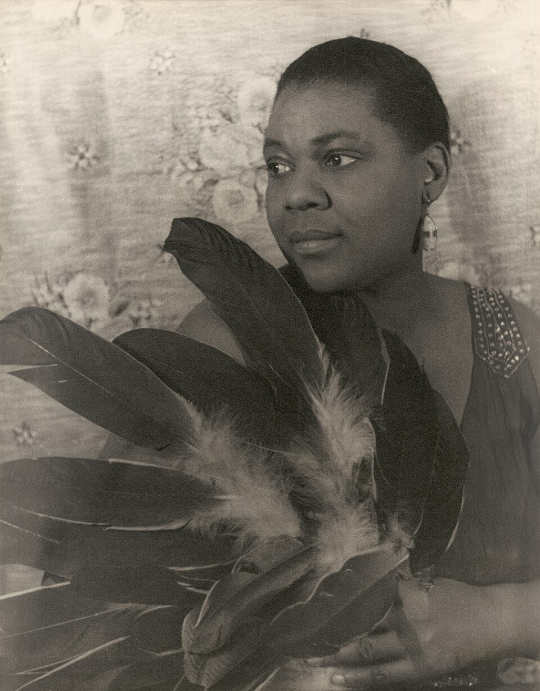

Directions: Read the full text, then answer the questions at the end.
The Great Migration began in the war years and ran through the 1920s. Chicago counted about 44,000 Black residents in 1910 and about 234,000 in 1930.
Jim Crow law fixed Black southerners in a lower place: segregated schools, and a vote taken away by poll taxes, literacy tests, and fraud. Landlords kept the sharecroppers' account books, and often the crop. Lynching enforced the order. The boll weevil ruined cotton harvests, and the great Mississippi flood of 1927 drove families into guarded levee camps.
The North pulled as hard. Mills, stockyards, auto plants, and railroads, short of workers after war production and the cutoff of European immigration, hired Black workers at wages several times farm pay. A Black man could vote in most northern states, and his children attended schools the law did not split by race.
News traveled above all by the Chicago Defender, founded by Robert S. Abbott in 1905 and carried south by Pullman porters. The Defender printed train schedules, job notices, and migrants' letters, and set May 15, 1917, as a Great Northern Drive, urging readers to leave together. Circulation rose, in Emmett J. Scott's count, from about 50,000 to about 125,000 in 1918.
Migrants arrived in neighborhoods earlier Black residents had built: Chicago's Black Belt, Detroit's Black Bottom and Paradise Valley, Cleveland's Central Avenue district, and Harlem. Each filled with churches, businesses, newspapers, and Urban League offices.
Housing was the sharpest fight. Rents were high for subdivided, worn buildings, and white owners used restrictive covenants, agreements barring sales or rentals to Black families. Chicago saw dozens of bombings of Black families' homes between 1917 and 1921. In Detroit in 1925 a crowd attacked Dr. Ossian Sweet's new house; shots from the house killed a white man, and Sweet, defended by Clarence Darrow, was tried for murder and acquitted. The house stayed his.
What migrants built included a culture of national reach. Langston Hughes published The Negro Speaks of Rivers in 1921 and his first book, The Weary Blues, in 1926, writing in the rhythms of jazz and the blues. Zora Neale Hurston, who arrived in New York in 1925, wrote stories drawn from Black southern speech and folklore. Alain Locke's anthology The New Negro (1925) gave the movement its name.
The music reached further. Jazz, carried north by the migration, filled Chicago clubs where King Oliver's band trained Louis Armstrong. Bessie Smith's blues records sold by the hundreds of thousands; her Down Hearted Blues was a best seller of 1923. Duke Ellington's orchestra became the Cotton Club's house band in 1927, broadcast nationwide by radio. The club admitted only white customers.

The Renaissance writers called what they claimed the New Negro: a Black American who refused the place assigned to him, who would vote, organize, speak in his own voice, and present Black life as a subject worthy of serious art. Dignity would not arrive as a favor. It had to be asserted.
The largest assertion came from Jamaican born Marcus Garvey, who built the Universal Negro Improvement Association, the UNIA, into a mass movement. At its 1920 New York convention, delegates marched through Harlem in uniformed ranks. The UNIA ran Harlem businesses. Its Black Star Line, financed by five dollar shares sold to Black buyers, was meant to carry Black trade across the Atlantic.
The line bought old ships in poor condition and lost money. In 1923 Garvey was convicted of mail fraud for selling stock in a ship the line did not yet own. He entered Atlanta federal prison in 1925; in 1927 President Coolidge commuted his sentence and he was deported to Jamaica. The UNIA never recovered its size, but its pride marked every Black movement after it.
The NAACP fought the same exclusion by investigation, publicity, and law. It documented each lynching, flew a flag from its headquarters reading A Man Was Lynched Yesterday, and pressed Congress for the Dyer anti-lynching bill. The bill passed the House in January 1922; southern senators filibustered it, and it was given up that December.
In Tulsa, Oklahoma, Greenwood was a prosperous Black business district. On May 31 and June 1, 1921, a white mob invaded it. About thirty five blocks burned, more than a thousand homes and businesses were destroyed or looted, and the death toll was never settled; estimates run into the hundreds. No one was punished. The decade that built Harlem also destroyed Greenwood.
1. Name two pushes and two pulls of the Great Migration, as the reading gives them.
2. How did the Chicago Defender spread the migration, and what two methods did it use beyond reporting news?
3. What did the housing fight in northern cities consist of? Give the Chicago evidence and the Detroit evidence from the reading.
4. The reading sets Garvey's UNIA and the NAACP side by side. State the main method of each organization, and give one result of each method in the 1920s.
5. What did Black Americans build in the cities of the North, and how did that building answer the country that had excluded them? Answer in a short paragraph, using at least three facts from the reading.
1. Name two pushes and two pulls of the Great Migration. Pushes, any two: Jim Crow law and disfranchisement by poll taxes, literacy tests, and fraud; sharecropping accounts controlled by landlords; lynching; the boll weevil destroying cotton harvests; the 1927 Mississippi flood and forced labor in the levee camps. Pulls, any two: northern factory, mill, stockyard, and railroad jobs at wages several times farm pay, opened by war production and the cutoff of European immigration; the vote in most northern states; schools not split by race in law.
2. How did the Chicago Defender spread the migration, and what two methods did it use beyond reporting news? Pullman porters carried bundles of the paper into the South, where it circulated hand to hand, reaching a circulation Scott counted at about 125,000 in 1918. Beyond news, the Defender printed practical help, train schedules, job notices, and letters from migrants already north, and it campaigned: it named May 15, 1917, as the Great Northern Drive and urged readers to leave on that date together.
3. What did the housing fight in northern cities consist of? Black tenants were confined to set districts and charged high rents for subdivided, worn housing. White owners used restrictive covenants to keep whole districts closed. Chicago evidence: bombs were set at the homes of Black families who crossed the line, dozens of bombings from 1917 to 1921. Detroit evidence: in 1925 a crowd attacked Dr. Ossian Sweet's new house, shots from the house killed a white man, and Sweet was tried for murder and acquitted after Clarence Darrow defended him. The house stayed his.
4. State the main method of the UNIA and of the NAACP, and one result of each in the 1920s. The UNIA organized Black people themselves: mass membership, race pride, and Black owned enterprise, shown in its Harlem businesses and the Black Star Line. Its result was the largest Black mass movement of the era, ending in collapse when the shipping line failed and Garvey was convicted of mail fraud in 1923, imprisoned in 1925, and deported in 1927. The NAACP worked by investigation, publicity, and law: it documented lynching and pressed Congress for a federal law. Its result was the Dyer bill's passage in the House in January 1922, followed by the bill's death by Senate filibuster that December.
5. What did Black Americans build in the cities of the North, and how did that building answer the country that had excluded them? Full credit answers name at least three things built: self sustaining neighborhoods with churches, businesses, and newspapers in Chicago, Detroit, Cleveland, and Harlem; a national culture in the Harlem Renaissance, in Hughes, Hurston, Ellington, and Bessie Smith, that claimed Black life as a subject for art; and organizations, the UNIA, the Urban League, and the NAACP campaign, that asserted political and economic power. The answer to exclusion is the point of the lesson: people assigned a lower place built institutions of their own, voted where they could, and stated in print, music, and organization that they were citizens and creators. Answers that list achievements without connecting them to exclusion earn partial credit. Strong answers also hold the counterweight the reading ends on: the Dyer bill's failure and the destruction of Greenwood in Tulsa in 1921 show the answer was made against continuing violence, not after it ended.